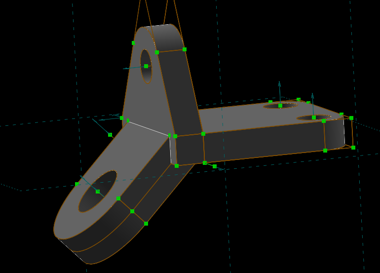
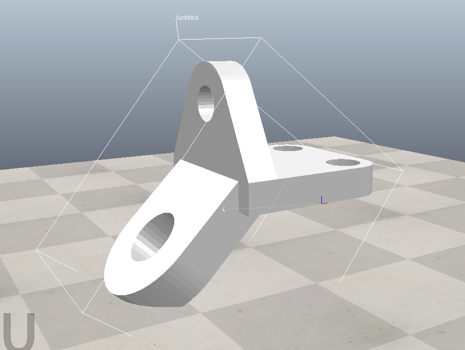
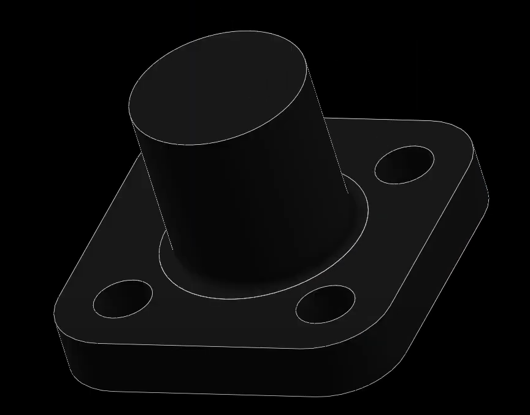
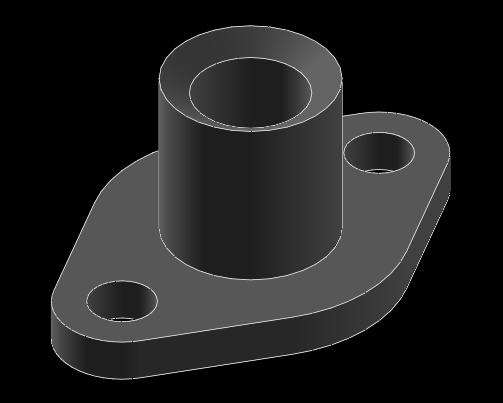
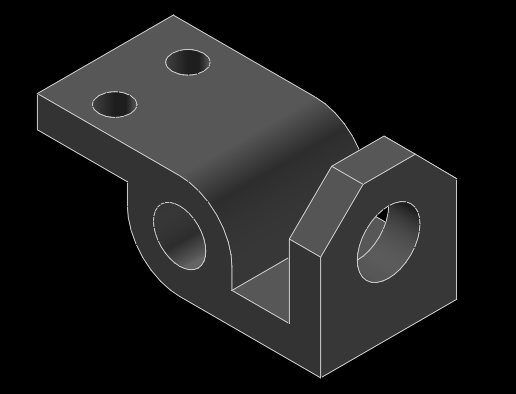

Attendance <<
Previous Next >> HW1_Exam
HW1
Homework 1 (10%):
利用 Solvespace 與 NX2312 建立 Parts 頁面中的零件
其他零件模擬練習
利用 Solvespace 繪製列表中零件的操作過程與說明影片如下:
影片標題: 國立虎尾科技大學機械設計工程系電腦輔助設計與實習- 作業一之一
所完成的零件檔案下載


Base plate 零件檔slvs.

Bearing block A 零件檔slvs.

Bearing block B 零件檔slvs.

Column base 零件檔slvs.

Dovetail bracket 零件檔slvs.

Rod support 零件檔slvs.

Head yoke 零件檔slvs.

Head attachment 零件檔slvs.

Guide plate 零件檔slvs.

Gland blank 零件檔slvs.

Gland 零件檔slvs.

Dovetail stop 零件檔slvs.

額外練習:
Side beam bracket
Side beam bracket 零件檔slvs.

Slide stop
Slide stop 零件檔slvs.

S-bracket
S-bracke 零件檔slvs.

Saw blade
Saw blade 零件檔slvs.

影片標題: 國立虎尾科技大學機械設計工程系電腦輔助設計與實習- 作業一之二
所完成的零件檔案下載
......
利用 NX2312 繪製列表中零件的操作過程與說明影片如下:
影片標題: 國立虎尾科技大學機械設計工程系電腦輔助設計與實習- 作業一之三
所完成的零件檔案下載
影片標題: 國立虎尾科技大學機械設計工程系電腦輔助設計與實習- 作業一之四
所完成的零件檔案下載
......
HW1 執行心得:
這次不僅維護網站，還有使用新的繪圖軟體solvespace，在維護的過程中我把我的帳號丟失了，所以整整慢了三週的進度，我重新補辦了帳號。
並照著老師的影片講解流程去重新設定我的網站，但又遇到了問題，因為我直接將影片檔抓進我的Codespaces的images裡，由於檔案過大無法 git push，於是我詢問chat gpt 但沒理解意思就照chat gpt的程式碼打上去，導致我的倉儲位置改變，所幸尋求老師幫助成功改回正確的倉儲位置，再來就是處理檔案過大的問題，由於之前commit了11次，老師建議我想辦法去刪除commit，我透過文章以及chat gpt 成功刪除commit 而這次我有真正的了解chat gpt 讓我使用git reset --hard HEAD~1 ，重置了未保存的更改，而我學習了老師上課講解的方法，將錄製好的影片上傳到YouTube，用嵌入程式碼的方式推影片在網站上，這樣節省許多空間，也不會有檔案過大的問題。
而我也花了一些時間去練習繪圖，使用solvespace，雖然使用起來不方便，但也成功畫了不少老師給的零件圖檔，並持續製作繪製的影片，已經將12題的零件圖都繪製完畢了，覺得最難的是Rod support，因為有許多圓角要繪製，並且繪製出來的圓角會與圓無法相切，導致繪製出來的圖形不美觀，再來就是需要旋轉功能的Gland blank以及 Gland，因為常常尺寸訂錯，忘記除與2，還有額外練習 Saw blade、 S-bracket、 Side beam bracket、4 Slide stop，這些零件較前面12題難，需要將零件拆解分開繪製，再重合一起，另外還有學習到使用陣列功能去繪製圖形，節省不少時間跟步驟，大致上熟悉這個軟體了。
從這幾週學習的經驗告訴我英文要學好，雖然程式碼對於我來說真的很難，但有chat gpt可以為我解說，只是要多用心去理解它所說的意思，而不是照抄，延續上一次的cp2023這一次的cad2024我想我學到了更多，不僅是在處理問題上，也更加理解學這門課的意義，而這次的我更有勇氣詢問老師問題，並且嘗試理解老師所說的解決方法，去認識更多的程式碼，或許還有很多不懂的地方，但我會努力地跟上這門課的進度。
HW1 自評分數:
完成上述流程後, 請將 HW1 自評分數輸入 cad2024 自評表單中.
Attendance <<
Previous Next >> HW1_Exam